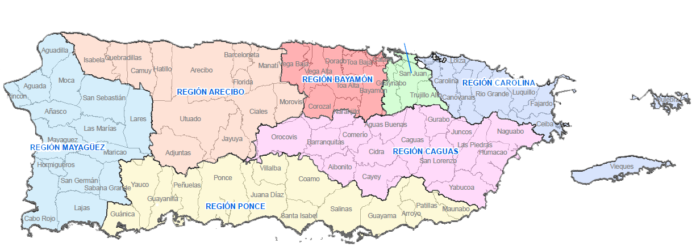
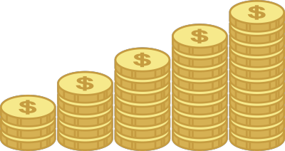
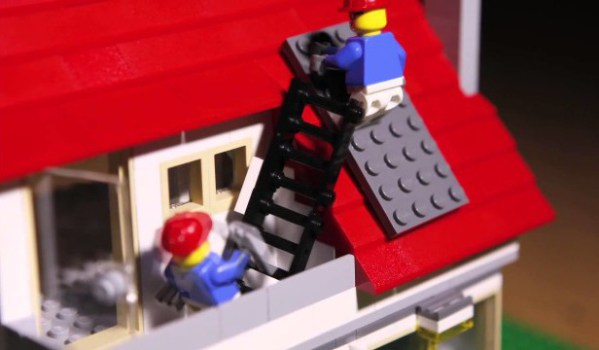

<div> <!-- Main Div -->

  <div class="container">

    <div class="container-fullwidth">
      
    </div>

    <div class="blog-header">
      <h1 class="blog-title">Mi Puerto Rico Solar</h1>
      <p class="lead blog-description">El centro de información para todo lo relacionado a la tecnología fotovoltaica en Puerto Rico</p>
    </div>

    <div class="row">

      <div class="col-sm-8 blog-main">

        <div class="blog-post">
          <h2 class="blog-post-title">Financiamiento para Sistemas Fotovoltaicos</h2>
          <p class="blog-post-meta">December 22, 2014 by <a href="#">Admin</a></p>

          
          <p>Al momento de administrar nuestro dinero, existen tres maneras de usar el capital: ahorrar, gastar o invertir. Dos herramientas importantes para invertir correctamente son: Retorno sobre Inversión ("Return on Investment" ROI) y Periodo de Recuperación de Inversión ("Payback Period")[^1]. En la instalación de un sistema fotovoltaico, mientras mayor sea la factura de energía eléctrica del usuario, mayor será el ROI y más corto será el periodo de Payback. Esto se debe a que luego del primer mes de instalar el sistema fotovoltaico, éste le liberará del pago de su factura de energía eléctrica haciéndole pagar sólo el mínimo[^2] establecido por la AEE.</p>
          <p>Existen varias alternativas para financiar su proyecto fotovoltaico:</p>
          <ol>
            <li><strong>"Equity"</strong> (Efectivo): Si tienen dinero ahorrado, ésta es excelente manera de invertirlo. Si el Periodo de Payback de su sistema fotovoltaico es menor o igual a 5 años es aún más recomendado.</li>
            <li><strong>Incentivos</strong>: Los incentivos del Fondo de Energía Verde de Puerto Rico son competitivos y funcionan a manera de rebate. El post titulado <a href="#">Incentivos de Energía Verde en Puerto Rico</a> contiene toda la información al respecto.</li>
            <li><strong>Préstamos</strong>: Existen préstamos tipo "balloon" exclusivos para Sistemas Fotovoltaicos donde utilizan el arreglo fotovoltaico como colateral. También se pueden utilizar prestamos tradicionales. Lo más importante en este caso es que el pago mensual del préstamo tradicional esté cerca del pago mensual que se hacía a la AEE antes de la instalación del sistema fotovoltaico.</li>
            <li><strong>Por Fases</strong>: Como los sistemas fotovoltaicos modernos son modulares (escalables) estos se pueden construir por fases. (ej. Instalación de 10 paneles fotovoltaicos para la Primera Fase y los restantes 10 serán instalados para la Segunda Fase)</li>
            <li><strong>Combinando</strong>: Cualquiera de las alternativas antes mencionadas se pueden combinar para financiar el proyecto fotovoltaico según sea la necesidad del cliente.</li>
            <li><strong>"Leasing</strong>: En este tipo de opción financiera, el cliente firma un contrato de arrendamiento por un máximo de 25 años en donde acuerda comprar la energía eléctrica a una razón fija de centavos por kWh determinados por la compañía arrendadora. El cliente no es dueño de su sistema sino que la compañía arrendadora se hace responsable del mismo. Al final del término del contrato usted tendrá la opción de comprar el sistema (que nunca fue suyo), renovar el contrato o remover su sistema fotovoltaico.</li>
          </ol>
          <hr>
          <ol>
            <li>El ROI y el Payback son calculados en todas las propuestas de sistemas fotovoltaicos de nuestros clientes.</li>
            <li> Para clientes residenciales este cargo mínimo es de $3 mientras que para clientes comerciales e industriales este cargo mínimo varía desde los cientos de dólares hasta miles de dólares dependiendo de la tarifa que aplique.</li>
          </ol>

        </div><!-- /.blog-post -->

        <div class="blog-post">
          <h2 class="blog-post-title">¿Qué hacer antes de instalar un sistema fotovoltaico?</h2>
          <p class="blog-post-meta">November 25, 2014 by <a href="#">Admin</a></p>

          
          <p>Cum sociis natoque penatibus et magnis <a href="#">dis parturient montes</a>, nascetur ridiculus mus. Aenean eu leo quam. Pellentesque ornare sem lacinia quam venenatis vestibulum. Sed posuere consectetur est at lobortis. Cras mattis consectetur purus sit amet fermentum.</p>
          <p>Etiam porta <em>sem malesuada magna</em> mollis euismod. Cras mattis consectetur purus sit amet fermentum. Aenean lacinia bibendum nulla sed consectetur.</p>
          <h2>Heading</h2>
          <p>Vivamus sagittis lacus vel augue laoreet rutrum faucibus dolor auctor. Duis mollis, est non commodo luctus, nisi erat porttitor ligula, eget lacinia odio sem nec elit. Morbi leo risus, porta ac consectetur ac, vestibulum at eros.</p>
          <h3>Sub-heading</h3>
          <p>Cum sociis natoque penatibus et magnis dis parturient montes, nascetur ridiculus mus.</p>
          <pre><code>Example code block</code></pre>
          <p>Aenean lacinia bibendum nulla sed consectetur. Etiam porta sem malesuada magna mollis euismod. Fusce dapibus, tellus ac cursus commodo, tortor mauris condimentum nibh, ut fermentum massa.</p>
          <h3>Sub-heading</h3>
          <p>Cum sociis natoque penatibus et magnis dis parturient montes, nascetur ridiculus mus. Aenean lacinia bibendum nulla sed consectetur. Etiam porta sem malesuada magna mollis euismod. Fusce dapibus, tellus ac cursus commodo, tortor mauris condimentum nibh, ut fermentum massa justo sit amet risus.</p>
          <ul>
            <li>Praesent commodo cursus magna, vel scelerisque nisl consectetur et.</li>
            <li>Donec id elit non mi porta gravida at eget metus.</li>
            <li>Nulla vitae elit libero, a pharetra augue.</li>
          </ul>
          <p>Donec ullamcorper nulla non metus auctor fringilla. Nulla vitae elit libero, a pharetra augue.</p>

          <p>Cras mattis consectetur purus sit amet fermentum. Sed posuere consectetur est at lobortis.</p>
          <blockquote>
            <p>Curabitur blandit tempus porttitor. <strong>Nullam quis risus eget urna mollis</strong> ornare vel eu leo. Nullam id dolor id nibh ultricies vehicula ut id elit.</p>
          </blockquote>
          <p>Etiam porta <em>sem malesuada magna</em> mollis euismod. Cras mattis consectetur purus sit amet fermentum. Aenean lacinia bibendum nulla sed consectetur.</p>
          <p>Vivamus sagittis lacus vel augue laoreet rutrum faucibus dolor auctor. Duis mollis, est non commodo luctus, nisi erat porttitor ligula, eget lacinia odio sem nec elit. Morbi leo risus, porta ac consectetur ac, vestibulum at eros.</p>
        </div><!-- /.blog-post -->

        <div class="blog-post">
          <h2 class="blog-post-title">Sistemas Fotovoltaicos (FV)</h2>
          <p class="blog-post-meta">December 14, 2013 by <a href="#">Chris</a></p>

          <p>Cum sociis natoque penatibus et magnis dis parturient montes, nascetur ridiculus mus. Aenean lacinia bibendum nulla sed consectetur. Etiam porta sem malesuada magna mollis euismod. Fusce dapibus, tellus ac cursus commodo, tortor mauris condimentum nibh, ut fermentum massa justo sit amet risus.</p>
          <ul>
            <li>Praesent commodo cursus magna, vel scelerisque nisl consectetur et.</li>
            <li>Donec id elit non mi porta gravida at eget metus.</li>
            <li>Nulla vitae elit libero, a pharetra augue.</li>
          </ul>
          <p>Etiam porta <em>sem malesuada magna</em> mollis euismod. Cras mattis consectetur purus sit amet fermentum. Aenean lacinia bibendum nulla sed consectetur.</p>
          <p>Donec ullamcorper nulla non metus auctor fringilla. Nulla vitae elit libero, a pharetra augue.</p>
        </div><!-- /.blog-post -->

        <nav>
          <ul class="pager">
            <li><a href="#">Anterior</a></li>
            <li><a href="#">Próximo</a></li>
          </ul>
        </nav>

      </div><!-- /.blog-main -->

      <div class="col-sm-3 col-sm-offset-1 blog-sidebar">
        <div class="sidebar-module sidebar-module-inset">
          <h4>Visión</h4>
          <p>Ser el centro de información de sistemas fotovoltaicos en Puerto Rico.</p>
          <h4>Misión</h4>
          <p>Proveer al público puertorriqueño con una plataforma donde se puedan educar al momento de adquirir un sistema fotovoltaico y maximizar su vida útil.</p>
        </div>
      </div>
        <div class="sidebar-module">
          <h4>Archivos</h4>
          <ol class="list-unstyled">
            <li><a href="#">December 2014</a></li>
            <li><a href="#">November 2014</a></li>
            <li><a href="#">October 2014</a></li>
            <li><a href="#">September 2014</a></li>
            <li><a href="#">August 2014</a></li>
            <li><a href="#">July 2014</a></li>
            <li><a href="#">June 2014</a></li>
            <li><a href="#">May 2014</a></li>
            <li><a href="#">April 2014</a></li>
            <li><a href="#">March 2014</a></li>
            <li><a href="#">February 2014</a></li>
            <li><a href="#">January 2014</a></li>
          </ol>
        </div>
        <div class="sidebar-module">
          <h4>Relacionado</h4>
          <ol class="list-unstyled">
            <li><a href="#">AEE Generadores Distribuidos</a></li>
            <li><a href="#">OEEPE</a></li>
            <li><a href="#">Página de Facebook</a></li>
          </ol>
        </div>
      </div><!-- /.blog-sidebar -->

    </div><!-- /.row -->

  </div><!-- /.container -->

</div> <!-- Main Div -->
